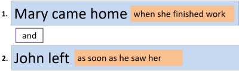

Clauses
Before you follow this guide, you should be confident that you
understand the material covered in
the guide
to phrase analysis.
That guide covered the structure of Noun, Verb, Adverb,
Prepositional and Adjective phrases and they were all exemplified by
reference to clauses in which they occur or to whole sentences.
Here, we take the next step up and consider clauses.
 |
Definition |
Traditionally, a clause is defined as a unit of language
consisting of a subject and its predicate. So, for example:
Mary likes tea
is a clause because it contains a subject (Mary) and
the predicate (likes tea). A clause may be a complete
sentence as in this case or it may be dependent on another clause as
in, e.g.:
I boiled the kettle because Mary likes tea
in which the clause is still identifiable as having a subject
and predicate but it is dependent on the first clause for its full
meaning.
As a working definition, we can say that a clause as a series of
words which contains at least one verb phrase.
For example, the bits on the right here are clauses; those on the
left are phrases:
| Phrases | Clauses |
| in the huge garden | he arrived |
| very, very slowly | playing the piano |
| an old dog | to help with the cooking |
| the woman on the corner | she obviously left early |
| the engineer's wife | going slowly under the bridge |
All the chunks on the right here contain a verb of some sort but
none on the left does.
However, if you have spotted that only he arrived and
she obviously left early can stand alone as pieces of intelligible
language, you have noticed something rather important. Three
of those so-called clauses (the second, third and fifth) do not have
a subject so, in the traditional definition, they do not constitute
proper clauses.
In this guide, we will be using the term clause for any group of
words containing a verb phrase but will distinguish between finite
and non-finite clauses.
There is more to follow but the distinction between finite and
non-finite forms (verbs or clauses) is important to understand if
you want to analyse clauses well. The difference is that:
- Finite clauses contain a verb or verb phrase which is marked
for tense, person or number. So, for example, all the
following are finite clauses and verb forms:
John has been to London
I saw Mary
Harry will get the money
and so on.
Unfortunately, English is defective insofar as some verbs which are marked for tense, person or number take a zero marking so, although the verb form in:
They swim
does not alter in English to show person, number or tense, it is still a finite form because it is actually marked for present time, plural subject and third person but none of these characteristics is obvious from the verb form. What we have is called a zero marking, often represented as Ø.
The verb in:
You drink
and
They drink
is identical but both are finite forms.
In other languages, such as Spanish, French or German, the form of the verb will be marked to show the relationships so it is somewhat easier in those languages to identify finite forms.
If we translate the last two clauses into those languages, we get:- Spanish:
tú bebes
ellos beben - French:
tu bois
ils boivent - German:
du trinkst
sie trinken
- Spanish:
- Non finite clauses are not so marked so there is no way of
knowing the tense or the number or person of the subject.
The following all contain non-finite forms (in bold):
staying out late
broken promises
to get the money
beautifully done
to help do the work
There is a separate guide to finite and non-finite verbs on this site, linked below in the list of related guides, and the considerations there apply to clauses just as they do to individual verbs.
 |
Matrix and Subordinate clauses |
In geology, a matrix is a fine-grained rock in which other
minerals are embedded and the definition will hold quite well for
our purposes.
Consider these two sentences:
- She saw the dog wanted food
- She saw the dog wanted to eat something
- In sentence 1., we have two clauses:
- The Matrix clause: She saw the dog
wanted food
The Subordinate clause embedded in the matrix: the dog wanted food
Both of these clauses are finite because the verb is marked for tense (and in many languages would also be marked for aspect and person). The marking concerns the past form of see, which happens to be irregular, and the past form of want which is regular. Even if we have no marking at all superficially in a clause such as:
I put it in the post
we can still recognise that the verb is finite but in this case there is what is known as zero marking of the tense. That's still marking of a sort and this is still a finite clause. - In sentence 2., we actually have three clauses:
- The Matrix clause: She saw the dog
wanted to eat something
Subordinate clause A embedded in the matrix clause: the dog wanted to eat something
Subordinate clause B embedded in Subordinate clause A: to eat something
Both the Matrix clause and Subordinate clause A are finite clauses with the verb marked for tense (saw and wanted respectively).
Subordinate clause A is embedded in the Matrix clause.
Subordinate clause B is embedded in Subordinate clause A and is non-finite (the verb, to eat, is unmarked for person or tense).
Subordinate clause A, therefore, is the Matrix clause for Subordinate B.
This means, if you are following, that the terms Matrix and
Subordinate are relative. A subordinate
clause can be the matrix clause for its own subordinate clause.
In many cases (as in these examples) the Matrix clause and the
sentence are the same. That needn't be the case because we can
have, e.g.,
Mary came home when she finished work and John left as soon as
he saw her.
In which we have two Matrix clauses both with an embedded
Subordinate clause (of time) but only one sentence.
If you prefer a graphical representation:

or

Another way to represent this structuring is:
 |
|
| or | |
in which the subordinate clauses are shown in a kind of hierarchy.
Here, both clauses are finite and you can see that the verbs are
marked for tense.
That need not be the case and we do not need to confine ourselves to
just two clauses, of course, so we can have:
Mary came home when she finished work feeling ready for an argument and John left as soon as he saw her because he wanted to avoid any trouble.
Here, we have seven clauses:
- Mary came home
the first main finite clause - when she finished work
the first subordinate finite clause - feeling ready for an argument
a second embedded non-finite clause - John left
the second main finite clause - as soon as he saw her
a third embedded subordinate finite clause - because he wanted
a fourth embedded subordinate finite clause - to avoid any trouble
a fifth embedded subordinate non-finite clause
The overall structure can be visualised like this, with finite
clause highlighted in green and non-finite clauses in
light blue:
There are two important points:
- All matrix clauses must be finite clauses
- Subordinate clauses can be finite or non-finite
This leads to the identification of four different kinds of sentences which can be classified according to the ways in which the clauses are structured:
- Simple sentences have just one clause and, of course, it
needs to be finite so
Mary came home
and
John left
are both simple sentences.
It is not possible in English to construct a simple sentence with a non-finite clause unless the finite form is understood. So, for example:
Coming?
is a simple sentence but the finite verb form (Are you) is understood. - Compound sentences which have two coordinated finite clauses
of equal weight so
Mary came home and John left
is a compound sentence. - Complex sentences which have a main clause and a subordinate
clause so
Mary came home when she finished work
John left as soon as he saw her
John left to avoid an argument
The dog wanted to eat
are all complex sentences. The subordinate clause may be finite (the first two) or non-finite (the second two). - Compound-complex sentences in which there is a combination
of coordination and subordination so
Mary came home when she finished work and John left as soon as he saw her
is a compound-complex sentence.
Non-finite clauses contain one of the following verb forms:
- the bare infinitive: She let me leave early
- a to-infinitive: I want to leave early
- a past participle form: Left on the table were the remains of dinner
- an -ing form: Leaving early was a real bonus.
Finite verb forms will always be marked for tense (even if as in, e.g., They come late, the marking for tense is the absence of a change to the verb or an ending) and often for person, too, as in e.g., He comes late.
In some analyses, the matrix clause is referred to as the superordinate clause. That will do just as well if it's easier to understand.
If you want more about types of subordinate clauses, go to the guide to conjunction, linked below.
Verbless clauses |
This sounds like a contradiction in terms because we have just
defined a clause as a unit containing a verb phrase. At times,
however, we can leave out the verb because it will be easily
understood. We also, incidentally, often have to leave out the
verb's subject as well.
Here are some examples:
- Leaving out the finite verb phrase
- If possible, come before six (= If it is
possible, come before six)
Whether now or later, we'll get it done (= Whether we do it now or later, we'll get it done)
These clauses often contain conjunctions such as whether, whenever, where etc. - Leaving out a non-finite verb phrase
- Too tired to cook, I went straight to bed (=
Being too tired to cook, I went straight to bed)
There are lots of interesting jobs in the sector, many highly paid (= There are lots of interesting jobs in the sector, many being highly paid)
Verbless clauses are sometimes called defective clauses or even simply small clauses.
 |
The functions of clauses |
Here we are speaking of grammatical function rather than
communicative function.
Matrix or superordinate clauses need little such analysis because their
function (to represent an entire thought) is clear.
Subordinate or dependent clauses in particular can
perform a number of grammatical functions in English which are not
necessarily parallelled in other languages.
The variety of functions can confuse learners who may be unable to
comprehend what they see or hear and unable to deploy clauses for
communicative effect.
Here's a run-down of the main functions of clauses:
- as nouns (nominalised clauses):
- subject:
What he said was appalling - direct object:
I don't know what to do about this - indirect object:
I bought whoever asked a drink - subject complement of a copular verb:
The hope is that she won't be late - object complement of a pseudo-copular verb
She made him be the captain
- subject:
- as adverbials:
- adjunct:
I waited on the platform until she arrived - disjunct:
Speaking honestly, I don't think he's up to the job - conjunct:
To add to the confusion, he forgot to hand out the instructions
- adjunct:
- in other roles:
- post-modifying a noun phrase:
The woman who bought my house
See the guide to relative pronoun clauses for more, linked in the list of related guides at the end. Because they modify noun phrases, relative pronoun clauses are also sometimes referred to as adjectival clauses. - complement (or object) of a preposition:
He was unhappy with what we decided - complement of an adjective:
Are you happy to go?
- post-modifying a noun phrase:
For more on nominalised clauses and adverbials see the guides (links below).
| Related guides | |
| conjunction | for more on how clauses are connected and links to other guides to subordination and coordination |
| finite and non-finite verbs | for more on the differences |
| verb types and clause structures | for a guide to the six main clause structures in English |
| syntax | for the general guide to the constituents of clauses |
| phrases | for a general guide to phrase structures |
| nominalised clauses | for an analysis of the ways clauses can act as noun phrases |
| adverbials | for more on adjuncts, conjuncts and disjuncts |
| relative pronoun clauses | for the guide dedicated to this complex area |